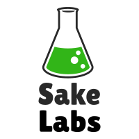

I've always believed that iteration is the key to innovation. And in the age of technology, scalable platforms are the bedrock for speed and efficiently. This is why I'm excited to create Sake Labs. Fundamentally, this platform will help focus on the extraordinary opportunities in today's society. Let's build!